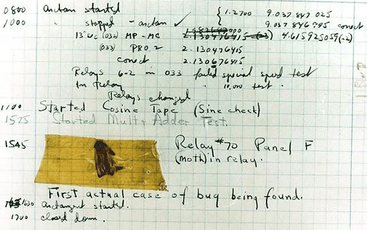

¡Cada Semana Hay uno nuevo!
Este artículo fue escrito por Joab Díaz.
Nuestra Historia empieza con Grace Murray Hopper, la Reina del Software en fin nacida en New York en 1906, creció en una época en donde la mujer la tenía muy difícil de conseguir empleo en áreas científicas sin embargo esto no detuvo a nuestra protagonista tras haber terminado sus estudios obtuvo un doctorado en matemáticas y además logro una posición como profesora en una de las universidades mas prestigiosas para mujeres de la época. Cuando los estados unidos entraron en la segunda guerra mundial Grace quería enlistarse en la marina sin embargo su edad y su peso ligero la descartaban sin embargo siguió intentando hasta que la recibieron en la reserva naval de los estados unidos un poco después comenzó a trabajar con el Mark 1, una de las primeras computadoras electro mecánicas de la historia y así fue como ella fue una de las primeras personas en programar el Mark 1 y no amigos programar en aquel tiempo no es como programar hoy en día es mas ni si quiera existían los lenguajes de programación como tal solo era instrucciones especificas almacenadas en 1 y 0 sin embargo Grace estaba a punto de cambiar eso. Mientras trabaja con el Mark 1 y posteriormente con el Mark 2 Grace tenia una idea revolucionaria, quería hacer la programación de estas máquinas algo más accesible algo que los humanos pudieran comprender sin mayor problema y así Grace se convierto en la pionera de los compiladores y su desarrollo dio como fruto el lenguaje cobol uno de los primeros lenguajes y que incluso hoy en día se sigue usando.
¿Y cuál fue la historia del primer bug? Pues bueno en aquel entonces era común que las computadoras tuvieran problemas mecánicos, un día cuando estaba trabajando con el Mark 2 la computadora estaba dando problemas inexplicables entonces revisaron los componentes en busca de la falla y la encontraron, una polilla fue el causante de esto ya que había quedado atrapada en los componentes y no dejaba trabajar en optimas condiciones al Mark 2, Grace documento el evento en su diario y pego la polilla en la pagina en la cual decía “Primer bug encontrado” y desde entonces a los errores computacionales y de programación se les llama Bug.
Bueno eso es todo por hoy chicos, la verdad es una historia bastante interesante y todavía nos falta mucho que seguir tratando de la vida de Grace, pero de momento lo dejo por aquí justo debajo de esto te dejo unas cuantas imágenes de Grace, El Mark2 y el famoso Primer Bug, nos vemos.
La tecnología actual de la generación de Frames con
IA y sus desventajas -27/01/20??
¿Qué es el Copyleft? -19/06/20??
¿La Generación actual de Graficas vale la pena?
-29/07/20??
¿Qué es y como implementar el Código Limpio?
-01/09/20??
¿La tecnología de la IA es mala? -08/06/20??
¿Una idea pequeña es mejor que una Grande?
-08/06/20??